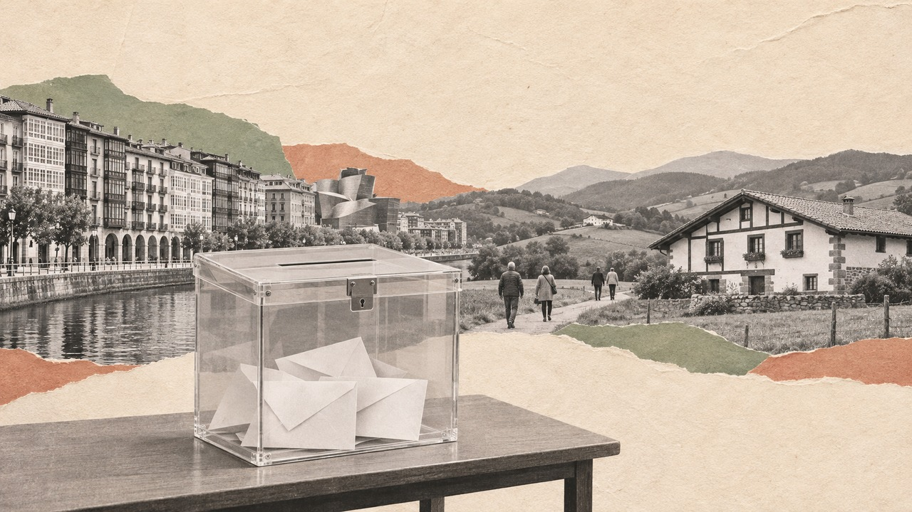

Actualidad · Guía del 29N en Euskadi · País Vasco
Elecciones del 29N en Euskadi: 18 escaños, 1.824.886 electores y una Bizkaia en empate a tres
Qué se vota, quién encabeza las listas, qué dicen las encuestas y cómo votó cada municipio en 2023. Con la media de encuestas, EH Bildu sacaría 7 de los 18 escaños vascos; Bizkaia, con 8, está en el aire.
Por Nacho G. del Álamo · · Actualizado el

Cada párrafo lleva una etiqueta: dato (cifra comprobable con las fuentes), patrón (relación que se repite, sin afirmar la causa), hipótesis (explicación posible, sin dos fuentes independientes) o contexto (hechos y declaraciones publicados por otros, enlazados). Cómo verificamos
DatoEl 29 de noviembre, Euskadi elige 18 de los 350 diputados del Congreso: 8 por Bizkaia, 6 por Gipuzkoa y 4 por Araba/Álava. Pueden votar 1.824.886 personas, 35.811 más que en 2023: 1.728.228 viven en el País Vasco y 96.658 en el extranjero. Esta guía reúne lo que hay en Mapa Electoral sobre las elecciones en Euskadi, de las listas y las encuestas a los resultados de cada municipio y cada barrio.
ContextoAdemás, cada territorio elige cuatro senadores, doce en total. En el Senado cada elector marca hasta tres nombres, y los cuatro más votados de la provincia salen elegidos.
Qué dicen las encuestas
DatoCon la media de las encuestas nacionales repartida por provincia, el reparto central de nuestro modelo da 7 escaños a EH Bildu, 5 al PSOE, 4 al PNV y 2 al PP. Es una proyección con un margen amplio: a 26 días de la votación, el error típico de la media es de unos cuatro puntos para un partido del 30 %.
Ver la tabla
| Provincia | Escaños | EH Bildu | PNV | PSOE | PP | Primero en más simulaciones |
|---|---|---|---|---|---|---|
| Bizkaia | 8 | 3 | 2 | 2 | 1 | EH Bildu (36 %) |
| Gipuzkoa | 6 | 3 | 1 | 2 | 0 | EH Bildu (87 %) |
| Araba/Álava | 4 | 1 | 1 | 1 | 1 | PSOE (59 %) |
DatoGipuzkoa es la provincia más clara: EH Bildu queda primero en el 87 % de las simulaciones, con el 33,9 % estimado. En Araba/Álava, el PSOE queda primero en el 59 %. Bizkaia es un empate a tres: EH Bildu y el PNV tienen el 22,4 % estimado cada uno y el PSOE el 22,2 %, y lo explicamos en la pieza sobre el feudo del PNV. Las cifras se actualizan cada día en las encuestas de Bizkaia, Gipuzkoa y Araba/Álava.
Quién se presenta
DatoEl BOE publicó 11 candidaturas al Congreso por Bizkaia, 11 por Gipuzkoa y 14 por Araba/Álava. Estas son las cabezas de lista de los partidos con más opciones:
| Partido | Bizkaia | Gipuzkoa | Araba/Álava |
|---|---|---|---|
| PNV | Idoia Sagastizabal Unzetabarrenetxea | Maribel Vaquero Montero | Gorka Urtaran Agirre |
| EH Bildu | Oskar Matute Garcia de Jalón | Oihana Etxebarrieta Legrand | Mikel Otero Gabirondo |
| PSOE | Patxi López Alvarez | Rafaela Romero Pozo | Javier Hurtado Domínguez |
| PP | Esther Martínez Fernández | Jon Echeverría Franco | Iñaki Oyarzábal De Miguel |
| Frente Amplio | Lander Martínez Hierro | Rosa Rubio Sánchez | José Damián García-Moreno López |
| Podemos | Jose Manuel de Pablos Bajo | Maite Gartzia Ontiveros | Garbiñe Ruiz Noriega |
| Vox | Marco Antonio Moreno Asla | Juan Dios Dávila Garijo | Jonathan Romero Gámiz |
ContextoCada candidato, con su probabilidad de salir elegido según la media de encuestas, está en las listas de Bizkaia, Gipuzkoa y Araba/Álava. Si quieres saber quién te representa ahora, prueba ¿Quién es mi diputado?
Cómo votó Euskadi en 2023
DatoEn las generales de julio de 2023, el PSOE fue el más votado en el País Vasco con el 25,4 % de los votos a candidaturas, por delante del PNV (24,2 %) y EH Bildu (24,1 %). Fue el empate a tres más ajustado desde 1977, como contamos en Euskadi, empate a tres. Cada territorio votó distinto: el PNV ganó en Bizkaia (27,1 %), EH Bildu en Gipuzkoa (31,4 %) y el PSOE en Araba/Álava (27,8 %).
DatoMunicipio a municipio, el mapa es otro: EH Bildu fue el más votado en 140 de los 251 municipios vascos, el PNV en 76, el PSOE en 29 y el PP en 6. La historia completa, de 1977 a hoy, está en ¿Quién gobierna País Vasco?.
Tu municipio y tu barrio
DatoLos 153 municipios vascos de más de 1.000 habitantes tienen página propia, con el censo del 29N, los resultados por sección censal, el voto por renta y la serie desde 1977: 75 en Bizkaia, 56 en Gipuzkoa y 22 en Araba/Álava. Las capitales: Bilbao, Donostia/San Sebastián y Vitoria-Gasteiz. Bilbao tiene además una página para cada uno de sus 24 barrios, de Abando a Otxarkoaga.
ContextoPara ver tu calle, el mapa por sección censal se abre en Bilbao y deja buscar cualquier dirección. Y para el día de la votación: cómo y dónde votar, el voto por correo y qué hacer si te ha tocado formar parte de una mesa.
Las piezas sobre Euskadi
- El PNV ganó en 92 municipios de Bizkaia en 2019 y en 55 en 2023
- El derbi en las urnas: Bilbao y Donostia, sección a sección
- Tres partidos en 1,3 puntos: el empate a tres de Euskadi en 2023
- Historia electoral del País Vasco desde 1977
- Los cinco pueblos más del PNV
- Los cinco pueblos más de EH Bildu
- La frontera de la renta: PP, Junts y PNV
ContextoLas páginas de comunidad y de provincia, con todos los datos de cada territorio: País Vasco (Euskadi), Bizkaia, Gipuzkoa y Araba/Álava.
Preguntas frecuentes
¿Cuántos diputados elige el País Vasco el 29N?
18: 8 Bizkaia, 6 Gipuzkoa y 4 Araba/Álava. Además, cada territorio elige cuatro senadores.
¿Cuántas personas pueden votar en Euskadi el 29N?
1.824.886 según el censo de consulta del INE: 1.728.228 residentes en el País Vasco y 96.658 en el extranjero.
¿Quién ganará en Euskadi según las encuestas?
En la media de encuestas de Mapa Electoral del 3 de noviembre, EH Bildu sería el partido con más escaños vascos (7), por delante del PSOE (5), el PNV (4) y el PP (2). Bizkaia está en empate a tres.
Elecciones en País Vasco (Euskadi) · Encuestas del 29N · Listas del 29N · Bizkaia, el feudo del PNV
Método y fuentes
- Qué se compara
- El censo de consulta del 29N, las candidaturas proclamadas en el BOE, el modelo de encuestas de Mapa Electoral del 3 de noviembre y los resultados de las generales de 2023 por provincia y municipio.
- Límites
- Es una guía: reúne cifras que se explican con más detalle en las páginas y piezas enlazadas. El modelo no es una encuesta vasca y sus cifras son las del 3 de noviembre; las del día están en las páginas de encuestas de cada provincia. Los resultados de 2023 son sobre votos a candidaturas y sin voto exterior.
- Cómo se calcula
- Censo: suma de los municipios de cada provincia (residentes más CERA). Resultados: votos por municipio sumados. Modelo: reparto central de cada provincia. Script: actualidad/src/resumenes/guia_euskadi.py. Cifras reproducibles con los scripts del expediente de la pieza. Metodología de Actualidad · Metodología del Atlas
- Fuentes
- Autoría
- Nacho G. del Álamo
- Revisión de datos y texto
- Nacho G. del Álamo, 3 de noviembre de 2026
- Publicado · actualizado
- 3 de noviembre de 2026 · 4 de noviembre de 2026, a las 08.26
- Correcciones
- Ninguna.
Serie «Camino al 29N»: 116 piezas
- Así queda el mapa electoral de España antes del 29N: el PP ganó en 40 provincias y el PSOE, en 10
- Quién va con quién el 29N: Frente Amplio y Podemos, separados en 47 provincias; en 2015, juntos habrían sacado 15 diputados más
- Las provincias que deciden el 29N: 32 escaños se movían en 2023 con menos de 5.000 votantes, y el PP defiende 13
- El PP ganó Coslada por siete votos: el PSOE pasó de ganar en 16 de los 24 grandes municipios de Madrid a 4, aunque subió en todos
- En la Navarra donde EH Bildu pasa del 40 % votó el 64 %; donde no llega al 15 %, el 71 %: el mapa de la participación, pueblo a pueblo
- La lista del PSOE por Valencia con Ábalos de número dos sacó en 2023 el 32,3 %, su mejor resultado desde 2008; el 29N, con Pilar Bernabé, el modelo le da los mismos 5 escaños
- El PP de Moreno sacó en mayo 150.000 votos más que el PP de Feijóo en las generales de 2023 en Andalucía, con 194.000 votantes menos: ganó votos en 603 de los 785 municipios
- PP y Vox pasarían de 18 a 20 de los 33 escaños valencianos con la media de encuestas; en Castellón, dos se los disputan cuatro candidatos
- En la Madrid más pobre votó el 61 %; en la más rica, el 83 %: entre los grandes municipios, la brecha es la mayor desde 1977
- El PNV ganó en 92 municipios de Bizkaia en 2019 y en 55 en 2023: su feudo llega al 29N en empate a tres
- Estás aquíElecciones del 29N en Euskadi: 18 escaños, 1.824.886 electores y una Bizkaia en empate a tres
- El derbi en las urnas: el PNV bajó en 414 de las 415 secciones de Bilbao y Donostia, y el PSOE ganó en las dos ciudades
- A cuatro semanas del 29N, 250 escaños están casi decididos y 204 candidatos se juegan los otros 100: la semana en que la campaña se paró
- Un voto en Santa Cruz de Mudela, 101 en Cantabria, 7.097 en Palencia: la semana en que el 29N se contó en márgenes
- Las dos calles que parten Barcelona: la Diagonal en el voto a la derecha, la Meridiana en el independentismo
- Quién vota qué, barrio a barrio: el PP sube 21 puntos donde pesan las rentas del capital, el PSOE 15 donde abundan los peones y Vox solo se mueve con los jubilados
- A seis semanas del 29N: en 534 barrios de España no votó ni la mitad del censo, y tres de cada cuatro están entre los más pobres
- Ante el 29N: del Polígono Sur a la Cañada Real, en 78 de los 93 barrios donde más pesan las ayudas sociales no votó ni la mitad
- Con el PSOE andaluz en mínimos: Sevilla, Jerez y otros 170 municipios que votaron a la izquierda en todas las generales de 1977 a 2008 dieron en 2023 más votos a PP y Vox
- A cinco semanas del 29N: en la calle de los Hermanos García Noblejas, en Madrid, PP y PSOE se cambian de acera 12 veces, y el PP siempre gana en el lado con más renta
- Ver las 116 piezas de la serie
Más datos: elecciones en País Vasco · elecciones generales del 29N de 2026: fecha y escaños por provincia · más piezas sobre escaños y sistema electoral.
Sigue leyendo
- EncuestasEncuestas de las elecciones generales del 29N: todas, con sus escaños, actualizadas cada día
- PactosSimulador de pactos del 29N: ¿quién puede gobernar? Decide qué vota cada partido
- El alquiler, distrito a distritoDesalojada la acampada de Sol: el alquiler sube más deprisa en el sur de Madrid, un 22,7% en Villaverde desde 2019 frente al 15,9% de Centro
- Los pueblos de los colonosLos pueblos que levantó Franco votan más a Vox que sus vecinos: en Tiétar, Rosalejo y Pueblonuevo de Miramontes pasó del 25 %
- Del balcón a la cárcelVic dio el 69 % a la Lliga en 1933 y hoy es la gran ciudad de Junts; L'Hospitalet dio el 77 % al Front d'Esquerres de Companys y hoy vota al PSC
- ActualidadTodas las piezas de actualidad
- AtlasAtlas de las anomalías electorales